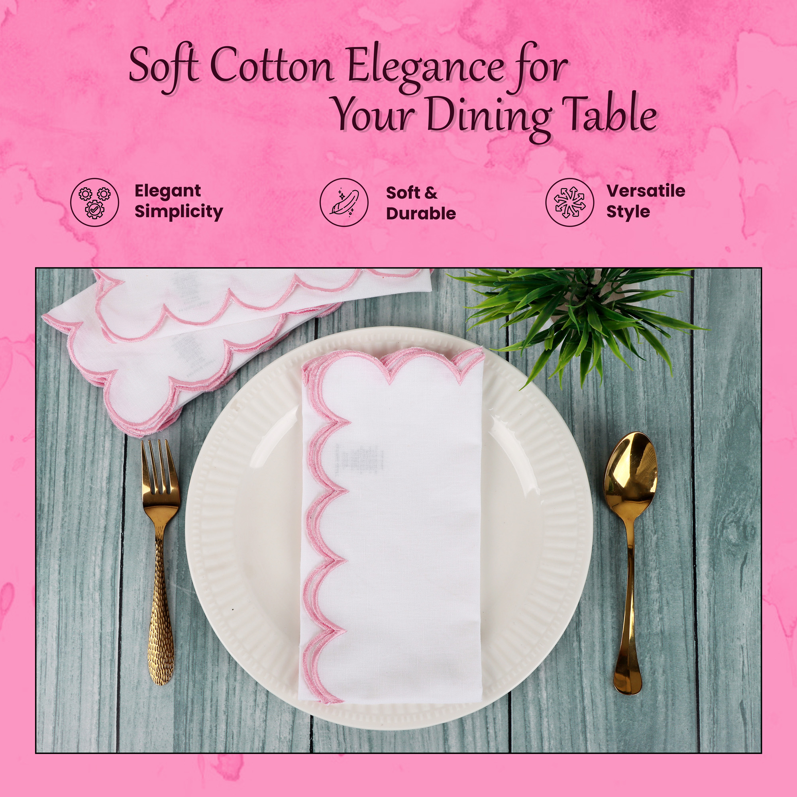

Natural Craft products need image-led context to sell well.
This page makes the product, material story, and purchase controls legible while keeping the brand visuals front and centre.
The product page now uses Natural Craft visuals in the main gallery area while keeping size, colour, quantity, related items, and cart actions easy to follow.
This page makes the product, material story, and purchase controls legible while keeping the brand visuals front and centre.

Natural Craft table linen visuals are especially strong when they are allowed to carry the page rather than sit behind placeholder art.
Related recommendations keep the visitor inside the same visual and category story so the storefront feels curated.